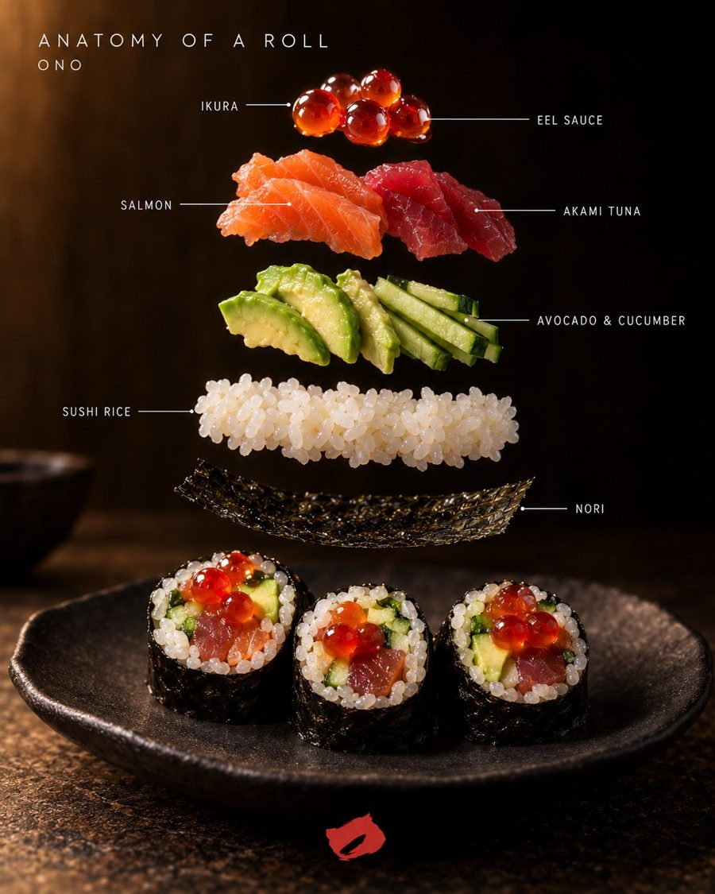

What is hosomaki? The roll born from paper, and ONO's arrival in Cartagena
From Edo's papermakers to a colonial house in Cartagena: the anatomy and legends of sushi's simplest roll, the one that gives ONO its name.

First, the faint crackle of nori. Then the rice, still warm and barely tart, and at the centre a single flavour, with no distractions. It's eaten in one bite and gone before you've had time to think about it. In the world of sushi, hosomaki is the most classic roll: a thin cylinder with nori on the outside, rice inside and, usually, a single ingredient in the centre. "Hoso" means thin and "maki" means rolled.
A roll born from paper
Hosomaki owes its life to an unexpected craft: papermaking. During the Edo period, in Asakusa, in what is now Tokyo, seaweed began to be pressed and dried into sheets using papermakers' techniques, and the sheet of nori was born. With it, rolling rice and filling became a habit of ordinary people: hand food, quick, to eat anywhere.
The names of the rolls carry their own mythology. Kappamaki, the cucumber roll, is named after the kappa, a creature of Japanese folklore that lives in rivers and ponds and, legend says, adores cucumbers. Tekkamaki, the tuna roll, is said to take its name from tekkaba, the gambling dens where people ate with one hand while betting with the other; others say the red of the tuna recalls red-hot iron.
I · The family
Hosomaki, uramaki and futomaki
- Hosomaki: thin, nori outside, one filling. One bite.
- Uramaki: the inside-out roll, rice outside and nori within.
- Futomaki: thick, with several fillings.
II · The craft
Anatomy of a roll
It all starts with the rice, seasoned with vinegar and handled warm. It goes on a sheet of nori with the fish or main ingredient in the centre, is rolled with a bamboo mat and cut into even pieces. What goes on top, a sauce or something crunchy, changes everything. On the ONO page you can see the anatomy of every roll, layer by layer.
Something lives in the water that deserves respect.
III · Cartagena
ONO comes to Cartagena
Colombia has water spirits of its own. Along the Magdalena River people speak of the Mohán, the guardian of the river, to whom some fishermen leave tobacco and aguardiente on the rocks so he won't tangle their nets or overturn their canoes. An ocean lies between the kappa and the Mohán, but the idea is the same: something lives in the water that deserves respect.
ONO, the hosomaki bar born in Bogotá, opens at Casa Salvaje between November and December 2026: shoji screens, timber beams, red light and a samurai at the door. Tuna, eel, salmon, hamachi and wagyu beneath the skin.
Don't miss the anatomy of every roll on the ONO page, before you taste them.
The SLVJ sushi bar is already open, and on the last Tuesday of each month there's a limited-seat omakase. Read sushi and omakase in Cartagena and join the list to hear when ONO opens.